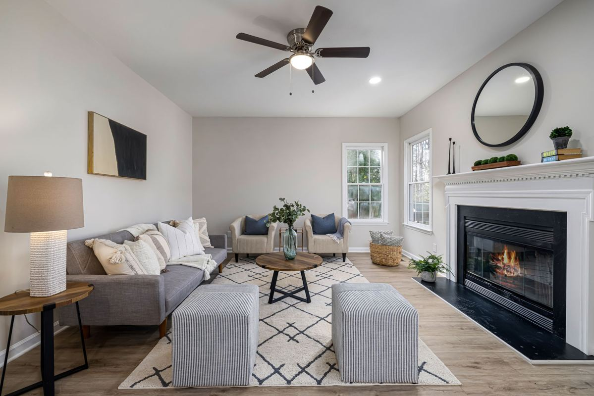

The photos are the showing that almost every buyer sees first, and they get about ten seconds each. Anything in frame that is not furniture, light, or floor is working against you. Clear the excess before the photographer arrives, not before the first open house, because by then the pictures are already online and doing their job either way.

Agents ask us for the same thing on nearly every listing: get the volume out so the rooms photograph at their real size.
Why the cut happens before the camera, not after
A room reads larger when there is floor showing and a clear path through it. That is most of what staging is doing. The National Association of Realtors publishes a profile of home staging built on what agents report from actual listings, and the through line is that buyers struggle to picture themselves in a space that is visibly full of somebody else.
You do not need a stager to get most of that. You need less in the room.
Room by room, what comes out
The garage. Almost always the biggest job and the one people leave for last. A garage that has absorbed a decade of things nobody wanted to decide about takes longer to clear than the inside of the house, which is why garage cleanouts is its own service. Buyers open the garage. They also want to see whether two cars fit, and they cannot tell if it is stacked to the rafters.
The living room. Extra chairs, the oversized sectional, the second coffee table, and anything shoved against a wall to make room for something else. One seating group with floor showing around it.
Bedrooms come down to the bed. A bedroom photographs on whether the bed looks like it fits the room, and what usually breaks that is the extra dresser, the desk wedged into a corner, or the exercise equipment nobody has touched since February.
Every house also has the room that quietly became storage. That one gets emptied all the way and given back a purpose, even if the purpose is an office with one chair in it.
Outside, pull the broken patio furniture, the grill that has not lit in two years, the rusted swing set, the dead planters, and whatever is stacked behind the shed. Exterior shots count as much as the interior ones and this is the cheapest fix on the list.
Then the closets and the attic. Buyers open closets, every time. And the attic has to be emptied before closing regardless, so doing it now costs you nothing you were not already going to spend.
Clear before the photographer, not before the open house. The pictures go up first and they stay up. A house that photographed full does not get a second first impression.
Where the cut list actually goes
Most of a house splits across donation, the city, and a haul.
Donation takes furniture in decent shape, working appliances, tools, dishes, and building materials. A Habitat for Humanity ReStore takes those categories and many locations schedule pickups for larger items. Each store sets its own accepted list, so read it before you load a truck and drive across town. The local version of that conversation, including what gets turned away at the door, is in where to donate furniture in DFW.
We would rather point you at the free route and lose the small job than take money you did not have to spend. Where donation stops working is timing. Pickup slots book out weeks ahead, and a photo date does not move because a charity has a waiting list.
The city handles more than people expect if you have time. Most cities around here run a bulky waste program on a schedule with limits and an accepted list. Plano publishes its rules at bulky waste collection, and every city in the area has an equivalent. Our Plano junk removal page lays out which parts of a cleanout the city handles for free and where a haul is the only option left. Read the accepted list first, because a pile the city declines sits at the curb of the house you are trying to sell, which is the exact opposite of what you were going for.
Recycling covers the cardboard, metal, and electronics a cleanout produces. The EPA has a plain starting point at reduce, reuse, recycle.
A haul covers the rest, which is usually the heavy or broken portion with no free route and no time left on the calendar.
The things with rules of their own
Mattresses are the single most common item people try to donate and cannot. Almost no charity in North Texas takes a used one and most cities have specific rules about how a mattress goes to the curb. The full picture is in mattress disposal in DFW.
Paint, stain, solvents, motor oil, gasoline, pool chemicals, pesticides, and propane tanks are household hazardous waste. We do not take any of it and no licensed hauler does. Your city takes it free through a household chemical collection program, and Plano residents use household chemical collection. Sellers hit this every time, because the back shelf of the garage is where it has been sitting since the last owner.
Check the contract before anything leaves. Appliances, window treatments, mounted televisions, and sometimes the shed are written into a sale, and hauling one off by accident is a problem at closing rather than a problem today.
Timing it against the listing date
The sequence that works:
Three weeks before photos, walk the house with your agent and build the cut list room by room. Two weeks out, book donation pickups, since that is the piece with the longest lead time. One week out, book the haul for what donation would not take. Two days before the photographer, we clear it. Photo day, the rooms are empty of everything that was making them look small.
If the house is already listed and the photos are done, it is still worth clearing before showings. It just costs you the pictures, which is the expensive part.
How the pickup runs
You point, we carry, we sweep. A crew looks at what is there, gives you a firm number before anything is lifted, and the number holds once the work starts. Disposal is included in it, so the quote is the bill. The furniture side of the work is on furniture removal.
Our own people do the carrying, not gig labor hired off an app that morning, which is why we are comfortable working in a house that is about to be photographed and has fresh paint on the walls. If you are on the buying side of a deal instead and the seller did not empty the garage, what the previous owner left behind covers that version of the job.
We run pickups seven days a week across Plano, Allen, Frisco, McKinney, Richardson, Little Elm, Prosper, The Colony, Wylie, and Fairview. Call before noon and the same afternoon is typical, though typical is the honest word rather than guaranteed, since access and job size are real variables. If you are working against a photo date or a closing, say so when you write. Tell us what you have and we will quote it before we load anything.
Frequently asked questions
How far ahead of the photos should the house be cleared?
Two days is enough for the haul itself. Start the decisions three weeks out, because donation pickups are the piece with the real lead time.
Do you work with agents directly?
Often, yes. Plenty of these jobs are booked by the listing agent with the seller's go-ahead. Tell us who to coordinate with and how to get in.
The house is empty except for the garage. Is that too small a job?
No. A garage on its own is one of the most common jobs we run, and it is usually the one holding up the listing.
Can you come back after closing for whatever is left?
Yes. A second visit after the movers is normal, and it is often the fastest way to hand over a clean house on the walkthrough.
What about the old paint cans in the garage?
Those stay with you. Paint and chemicals go to your city's household chemical collection program, free, and we will point you at the right page for your address.
If a listing is coming and the house needs less in it, the rest of what we handle is on the services page. There is no rush on our end.